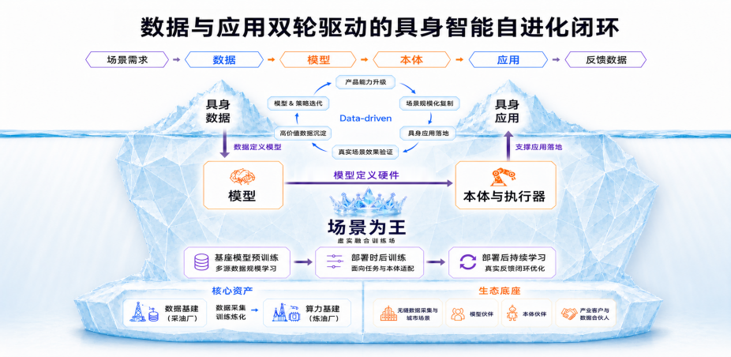

团队与人才培养
截至 ，公司正式员工 20 人（2 名博士、13 名硕士、5 名本科），全部通过市场化公开引进。团队成员来自北京大学、南京大学、中国科技大学、复旦大学、南开大学、东南大学、南京航空航天大学、哥伦比亚大学、佐治亚理工、曼彻斯特大学等国内外知名高校，以及阿里、科大讯飞、华为、大疆、依图、云从等 AI 公司。
公司对标北上深一线科技企业标准，持续扩充高潜人才，面向全国开展校企合作。目前实习及培养人才规模超过 50 人，持续打造数据集团人工智能人才梯队。
数采实习生招募
用真实示范，帮助机器人理解动作、积累经验。
在采集、质检与反馈中，参与 AI 的成长。
WHO WE ARE
华智（无锡）人工智能科技有限公司（简称“华智AI”），是无锡数据集团布局人工智能赛道、发展 AI 核心业务的关键承载平台，同时也是无锡（华为云）人工智能创新中心的运营主体。公司聚焦工业场景，开展具身数据服务和应用落地两块核心业务，致力于打造数据与应用双轮驱动的具身智能自进化闭环。

公司战略图查看原图 ↗截至 ，公司正式员工 20 人（2 名博士、13 名硕士、5 名本科），全部通过市场化公开引进。团队成员来自北京大学、南京大学、中国科技大学、复旦大学、南开大学、东南大学、南京航空航天大学、哥伦比亚大学、佐治亚理工、曼彻斯特大学等国内外知名高校，以及阿里、科大讯飞、华为、大疆、依图、云从等 AI 公司。
公司对标北上深一线科技企业标准，持续扩充高潜人才，面向全国开展校企合作。目前实习及培养人才规模超过 50 人，持续打造数据集团人工智能人才梯队。
01 / MEET YOUR MISSION
你认真完成的操作，
会成为机器人学习真实世界的素材。

一条数据的旅程 点击探索 ↓
高质量靠标准 · 高效率靠产线 · 有效性靠闭环
ACTION DEMO
现场演示 约 48 秒
演示者佩戴双手采集装置完成折叠。留意双手接触毛巾的位置，以及手机画面里能否看清完整动作。
单独打开视频点选一个动作，看看采集时要关注什么。
01 / 抓取与放置
按任务要求抓起物体，移动到指定位置，再平稳放下。
任务示意 · 具体采集内容以项目安排为准。
认识这些动作背后的采集设备EQUIPMENT GUIDE
同一次抓取，摄像头能记录工件在哪，手套能记录手指怎么弯。具体设备和信号按项目配置。
02 / FIND YOUR PATH
带着这些特质，来聊聊你的可能性。
好奇心 ✦认真细致 ✦愿意动手 ✦乐于协作 ✦03 / YOUR FIRST DATA CHALLENGE
30 秒小体验，感受数据质量的判断方式。
仅为互动示例，不是招聘测评。
抓取 → 遮挡 → 放置
训练用途：学习成功完成取放任务
04 / BUILD IT TOGETHER
华智（无锡）人工智能科技有限公司
具身数据 · 具身模型 · 具身应用
SCENE FIRST
从真实场景需求出发，连接数据、模型与应用。
你参与的数据工作，是这条链路的起点。
多源采集、处理审核与资产治理
WAM-inT 工业装配具身模型
在真实工位验证效果，反馈回流
数据驱动应用 应用反哺数据


从「我想了解 AI」，
到「我参与了 AI」。

扫码登记意向 → 招募沟通 → 了解具体安排
地点、周期、出勤与补贴，以招聘沟通确认为准。
你可以先了解任务要求、练习基础操作，再在反馈中逐步提升。具体岗位要求请与现场招募人员沟通。
还要让关键交互清楚、任务过程完整，并按规范记录结果。遇到遮挡、异常或任务失败，需要反馈、补采或按用途分类。
请扫码登记意向，或直接咨询现场招募人员，确认实习地点、周期、出勤要求和补贴标准。